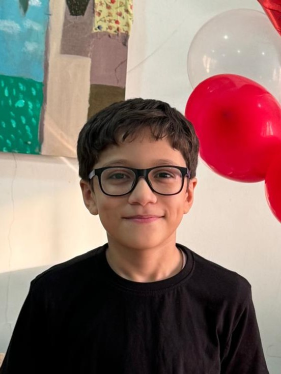

الخريطة الذهنية الهندسية
تتبع حركة المثلث السماوي والزاوية θ تحت الأفق
دليل المحاكاة
- 📍 النقطة المركزية تمثل موقعك في الدوحة.
- 🌅 الزاوية 0° تمثل لحظة غروب الشمس تماماً.
- 🌙 الزاوية 18° تمثل بداية الفجر الصادق.
- 📐 المثلث يوضح العلاقة بين الارتفاع والمسافة الأفقية.
إحصائيات الرصد
📐 المعادلات الرياضية المستخدمة
معادلة الارتفاع الهندسية
h = d × tan(θ)
حيث h الارتفاع، d المسافة الأفقية، θ زاوية الانخفاض
معادلة ظل التمام (Cot)
cot(θ) = 1 / tan(θ)
تستخدم لتحديد المسافة الأفقية بناءً على ارتفاع ثابت
🎬 فيديو المشروع
👨💻 عن المصمم

يوسف وليد محمد
الصف 8/1 - مدرسة أبو بكر الصديق الإعدادية للبنين
المشروع
مشروع "هندسة القيم الرمضانية" من إبداع الطالب يوسف وليد محمد من الصف 8/1 بمدرسة أبو بكر الصديق الإعدادية للبنين. يجمع المشروع بين الرياضيات والهندسة والقيم الإسلامية، وتم تطويره كجزء من برنامج المبدع الصغير لإظهار كيفية استخدام التكنولوجيا في خدمة القيم الدينية والعلمية.
المشروع يوفر محاكاة تفاعلية لحساب مواقيت الصيام في دولة قطر باستخدام معادلات جيب التمام الكروي والزوايا الهندسية، مما يجعل العلم الرياضي أكثر متعة وفائدة.
🎯 الهدف
تعليم الطلاب الربط بين العلوم الرياضية والقيم الإسلامية من خلال تطبيق عملي.
💡 الابتكار
محاكاة تفاعلية توضح العلاقة بين الزوايا الهندسية ومواقيت الصيام.